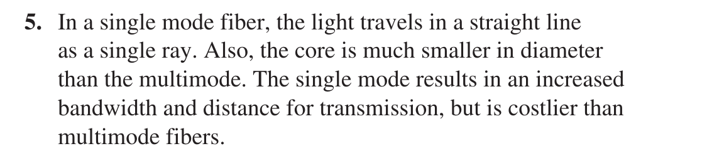
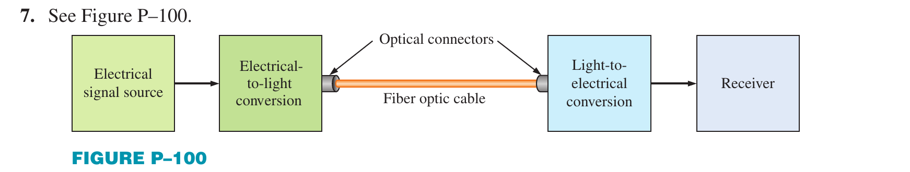
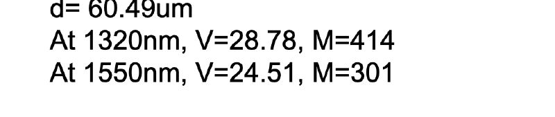

Floyd: Ch.13 Data Transmission, section 13-1 Data Transmission Media (p.740-745): optical fiber cable, modes (multimode, single-mode, 50/125, 62.5/125, 8.3/125), link block diagram, connectors; Section Checkup; Problems 5 and 7 (p.793; answers A-27). Floyd has NO critical angle, numerical aperture, attenuation or dispersion: the deeper theory relies on the lecture and Tooley.
The 37-slide lecture has four calculation exercises (slides 20, 22, 27, 36); the module solves and verifies them, and only slide 36 has a printed answer. The module has 2 interactive demos (fibre calculator, Snell/TIR ray) and records the 7 mismatches found in the material.
When avionics and cabin networks need far more bandwidth than copper wire can give (Modules 05, 06), optical fibre becomes the choice: light, extremely wide bandwidth, immune to electromagnetic interference. This module explains how a fibre guides light by total internal reflection, how to compute the critical angle, numerical aperture and number of modes, then attenuation, dispersion, fibre types, cable construction and communication systems, with two live demos on the page.
An optical fibre is a waveguide for light with very little loss; it has a core, a reflective cladding and a protective layer
Advantages: light, small, extremely wide bandwidth, immune to EMI, little crosstalk, reliable; copper is about 5 times heavier, saving up to about 1,300 kg on a large aircraft
Drawbacks: cost, fitting precision, minimum bend radius, mechanical strength
A380, Boeing 787 and Boeing 777 (ARINC 636) have optical networks; older aircraft need upgrades, especially for entertainment
PART 1/5 · 08
What is an optical fibre?
An optical fibre is a waveguide along which an electromagnetic wave (light) travels with very little loss. Structure: a core (higher refractive index n₁), a reflective cladding (lower index n₂ < n₁) and a mechanical protective coating. Many fibres are bundled into a cable with aramid strength yarn and an outer jacket.
A sample optical link: electrical signal → light source (LED or laser) → fibre → optical receiver (photodiode) → electrical signal.
Click the image to enlarge📖 Explained for complete beginners
Think of a fibre as a pipe lined with mirrors: light entering one end is reflected over and over at the wall and comes out of the other end. The "mirror" is not metal but the refractive index difference between core and cladding, so almost no energy is lost at each reflection.
PART 1/5 · 08
History: 1910, 1970, 1990
Year
Milestone
1910
Hondros and Debye analyse dielectric waveguides: light can be guided in a cylindrical structure by total internal reflection
1970
Corning makes the first practical optical fibre, attenuation below 20 dB/km: opens long-distance communication
1990
Optical fibre first used in aircraft: high-speed data, EMI immunity, low weight
2020
Widely used and continually improved in modern aircraft
Click the image to enlarge📖 Explained for complete beginners
The 1970 figure of 20 dB/km is worth remembering: it means 1/100 of the power remains after 1 km. Today fibre reaches about 0.2 dB/km, 100 times better. Tooley only says the Boeing 777 was the first commercial aircraft to enter production with an optical network; the 1990 milestone is the lecture's.
PART 1/5 · 08
Advantages and disadvantages versus copper
Advantages (Tooley 10.1): light and small; exceptionally wide bandwidth and very high data rates; relative freedom from electromagnetic interference; much less noise and crosstalk; relatively low attenuation; high reliability and long life; electrical isolation and no ground loops.
Copper is about 5 times heavier than polymer optical fibre cabling and 5 times heavier than silica fibre; on a large latest-generation aircraft with sophisticated avionics the saving can be up to 1,300 kg.
Disadvantages: industry resistance to new technology; a high degree of precision when fitting cables and connectors; concerns about mechanical strength and the need for a large enough bend radius.
📖 Explained for complete beginners
Quiz 12: the significant advantage of optical networks in large aircraft is reduced weight, not lower installation cost or ease of maintenance. Quiz 11: a high data rate needs wide bandwidth. Quiz 17: the main advantage of monomode fibre is faster data rates.
A common puzzle: copper is "5 times heavier" than both polymer and silica fibre; Tooley gives the same 5 for both, so it is the book's approximate wording.
PART 1/5 · 08
Today: fibre in the cockpit and passenger cabin
Use is growing fast because of bandwidth demand.
Cockpit: EFB, enhanced vision systems, large video-rich displays, HUD, cameras, through an optical avionics network switch.
Passenger cabin: in-flight entertainment (on-demand movies, Wi-Fi internet, games, shopping) through a cabin network switch and a Wi-Fi access point linked by fibre.
Click the image to enlarge📖 Explained for complete beginners
Link to Module 06: large displays and cameras need video streams, which an ARINC 429 bus at 12.5 to 100 kbps cannot carry; hence the need for high-speed networks such as AFDX or optical fibre.
PART 1/5 · 08
Aircraft using standardised fibre, and where it is fitted
The lecture lists civil and military aircraft using standardised fibre: A350 XWB, A380-800, Boeing 787, A340-600, F-22, Eurofighter Typhoon, A400M, F-35, Merlin, Wildcat and Chinook helicopters, and others.
Why standardise: high bandwidth, light weight, EMI immunity, and common aerospace-standard fibres and connectors for reliability, interoperability and easier maintenance.
Typical places: passenger cabin (IFE, Wi-Fi), flight deck (EFB, video displays), network backbone (optical switches linking cockpit and cabin), tail (communications, antennas, data links), engines and wings (health monitoring, high-temperature sensors), flight control and sensors.
Click the image to enlarge📖 Explained for complete beginners
One slide detail to read carefully: the label "Boeing CHINOOK HC.3 (Unmanned aircraft / Concept)" in the bottom row sits beside a picture of a jet, while another cell is a Chinook helicopter. The picture and label do not match, so this module does not treat that label as a fact.
PART 1/5 · 08
Tomorrow: upgrading older aircraft and fibre sensing
Optical networks are already built into the A380 and Boeing 787. Many older aircraft need wire and cable upgrades (from heavy, bandwidth-limited copper) to optical networks for bandwidth, especially entertainment.
Next applications
Content
Data communications
High-speed data for avionics, IFE, aircraft systems
Secure communications
Optical links with low probability of interception
Fibre sensing
Strain and load (wings, fuselage), temperature (engines), impact detection and location (composites)
Click the image to enlarge📖 Explained for complete beginners
The sensing idea: the fibre itself is the sensor. When it is stretched, heated or hit, the light passing through changes; measuring that change reveals strain or temperature at a specific place. It suits composites well, because internal damage is hard to see.
PART 2/5
02
Light, refractive index and Snell's law
Light is an electromagnetic wave: λ = v/f; speed in a material v = c/n with n = √ε_r
Snell's law: n₁ sin θi = n₂ sin θr; from lower to higher index the ray bends toward the normal
Critical angle sin θc = n₂/n₁ (n₁ > n₂), where the refracted ray runs along the boundary (90°)
For θi > θc there is total internal reflection: all the light returns to the original medium
PART 2/5 · 08
Light is an electromagnetic wave
The spatial period is the wavelength λ, the time period is the period T = 1/f. Relationship: λ = v/f = vT. Visible light is about 400 to 700 nm. In vacuum v = c ≈ 3 × 10⁸ m/s; in a non-magnetic dielectric v = c/√ε_r.
Silica fibre example: n ≈ 1.44 (ε_r = n² ≈ 2.07) gives v = 3×10⁸/1.44 ≈ 2.08×10⁸ m/s.
Click the image to enlarge📖 Explained for complete beginners
Numbers re-checked: 3/1.44 = 2.083, so the slide's 2.08×10⁸ is right. Floyd (Figure 13-10) also gives the spectrum and notes that data communication lies mostly in the radio, microwave and infrared bands; the fibre wavelengths of 850, 1310, 1550 nm are all near-infrared.
PART 2/5 · 08
Refractive index and the speed of light in a material
The refractive index n = √ε_r tells how much light is slowed relative to vacuum: v = c/n.
Click the image to enlarge📖 Explained for complete beginners
A mismatch on the slide: the original table gives water ε_r ≈ 80 but n ≈ 1.33. If n = √ε_r then √80 ≈ 8.9. The 80 is the static permittivity of water; at light frequencies ε_r ≈ 1.77 (since 1.33² = 1.77). The table above drops the ε_r column to avoid confusion. The others agree: glass 1.5² = 2.25; PMMA 1.6² = 2.56. Speed: 3/1.33 = 2.26 (the slide's 2.25 is rounded).
PART 2/5 · 08
Snell's law
When a ray meets the boundary between two dielectrics of different refractive index it changes direction (refraction): n₁ sin θi = n₂ sin θr, with θi and θr measured from the normal.
Into a higher index (n₂ > n₁): θr < θi, the ray bends toward the normal.
Into a lower index (n₂ < n₁): θr > θi, the ray bends away from the normal.
Click the image to enlarge📖 Explained for complete beginners
Important note on Tooley: section 10.2 says that going from higher to lower refractive index the ray is "bent towards the normal" and the reverse. That sentence is swapped relative to Snell's law; lecture slide 12 (above) is right. Self-check: from glass (1.5) to air (1.0) at θi = 30°, sin θr = 1.5 × 0.5 = 0.75, θr = 48.6°, larger than 30°, so the ray moves away from the normal (Demo 2 gives the same).
PART 2/5 · 08
Critical angle and total internal reflection
For n₁ > n₂ the refraction angle is always larger than the incidence angle. When θr = 90° the ray runs along the boundary; the corresponding incidence angle is the critical angle: sin θc = n₂/n₁.
Condition
Result
θi < θc
Part refracts into medium 2, part reflects
θi = θc
The refracted ray runs along the boundary (θr = 90°)
Click the image to enlarge📖 Explained for complete beginners
Tooley Test Your Understanding 10.2 (glass-air, 1.5 and 1.0): sin θc = 1/1.5 = 0.667, θc = 41.8°. Try it in Demo 2 with n₁ = 1.5, n₂ = 1.0: drag the incidence angle from 41° to 42° and the refracted ray disappears.
Quiz 13: at exactly the critical angle the emerging ray travels along the boundary. Tooley also gives θc = sin⁻¹(n₂/n₁) with n₁, n₂ the indices of the denser and less dense media.
PART 2/5 · 08
Fibre structure and the index profile
Layer
Role
Typical size
Core (n₁)
Transparent dielectric, high index, carries the light
5 to 100 µm (e.g. 9, 50 µm)
Cladding (n₂)
Lower index, keeps light in the core by TIR
about 125 µm
Coating
Silicone rubber, protects the fibre
250 to 300 µm
Outer jacket
Plastic, mechanical protection
about 0.9 to 3 mm
Index profile: the core is higher than the cladding (n₁ > n₂).
Click the image to enlarge📖 Explained for complete beginners
Quiz 3: the typical core diameter of a single-mode fibre is 5 µm (Tooley Figure 10.5); quiz 8: the typical cladding diameter is 125 µm. Note that Tooley section 10.4 describes the fibre in the cable as 140 µm with a 50 to 70 µm core; sizes vary with the fibre type.
PART 3/5
03
Guiding light: acceptance angle, NA and modes
Light is kept in the core by a chain of total internal reflections, even when the fibre is bent
Acceptance angle θa and numerical aperture: NA = sin θa = √(n₁² − n₂²) in air
Normalised frequency V = π d NA / λ; number of modes N ≈ V²/2 for multimode step-index fibre
Each ray at a different propagation angle is a mode; higher-order modes travel longer paths
PART 3/5 · 08
Guiding light in a fibre by total internal reflection
Light entering the core meets the core-cladding boundary at an angle greater than or equal to the critical angle and is totally reflected, then meets the opposite boundary... Through this chain of reflections it runs along the core, even when the fibre is bent. A ray with an incidence angle below θc passes into the cladding and is lost by scattering or absorption.
Condition: n₁ > n₂ and θi ≥ θc with sin θc = n₂/n₁.
Click the image to enlarge📖 Explained for complete beginners
Quiz 1: the core index is larger than the cladding's. Quiz 15: light propagates in a fibre by total internal reflection (not continuous refraction or modal dispersion). Tooley Test Your Understanding 10.3 asks for a sketch of this.
PART 3/5 · 08
Acceptance angle and numerical aperture
Only rays entering the fibre inside the acceptance cone (half-angle θa) are guided. Applying Snell at the fibre end (air to core): n₀ sin θ₁ = n₁ sin θ₂. The limit occurs when the ray inside the core meets the boundary exactly at the critical angle, giving:
NA = n₀ sin θa = √(n₁² − n₂²), in air NA = sin θa
NA describes the light-gathering ability of the fibre.
Click the image to enlarge📖 Explained for complete beginners
Derived from the geometry (slide 18): the angle to the axis inside the core θ₂ and the boundary angle φ satisfy θ₂ = 90° − φ, so n₀ sin θ₁ = n₁ cos φ. With φ = θc: cos θc = √(1 − (n₂/n₁)²); multiplying by n₁ gives √(n₁² − n₂²). Quiz 7: θa = 45° gives NA = sin 45° = 0.707. Quiz 9: NA = 1 means θa = 90°, i.e. all the light from the source is captured (ideal).
Slide 19 writes "θ₁ = θc = θa" for the limiting case; this is inaccurate, see the module's warning box (the two angles are measured in different places and are not equal).
PART 3/5 · 08
Exercise 1 (slide 20): θc, θa and NA
Task: a fibre has n₁ = 1.53 (SiO₂) and n₂ = 1.50 (SiO₂ with GeO₂ doping). Compute the critical angle θc, the acceptance angle θa and the numerical aperture NA.
The module's solution (the slide prints no answer):
Click the image to enlarge📖 Explained for complete beginners
Look at the gap between 78.6° and 17.5°: a fibre with a tiny index difference (0.03) still has a large critical angle (rays must run almost parallel to the axis to be guided) and a narrow acceptance cone. It is also proof that θc and θa cannot be equal as slide 19 writes. All numbers were recomputed in the notebook and in Demo 1 (whose default is exactly this exercise).
PART 3/5 · 08
Propagation modes, normalised frequency V and mode count
Light in the core travels as many separate rays, each on a different path called a mode; every mode satisfies the TIR condition. Low-order modes have small angles (near the axis), high-order modes have large angles (near the critical angle) and travel longer paths, giving more modal dispersion.
V = (π d/λ) √(n₁² − n₂²) = (π d/λ) NA; for V ≫ 1 (multimode step-index): N ≈ V²/2.
Click the image to enlarge📖 Explained for complete beginners
Three variables to remember: the larger the core (d), the shorter the wavelength (λ) and the larger the NA, the larger V and the more modes. A single-mode fibre has a low V (standard theory: below about 2.405; this is the module's addition, the lecture gives no threshold), so only one mode propagates; that also explains why single-mode needs a very small core (about 8 to 10 µm).
PART 3/5 · 08
Exercise 2 (slide 22): V, mode count and θa
Task: d_core = 62.5 µm, NA = 0.275, λ = 1300 nm. Compute V, the mode count N and θa.
The module's solution:
V = π d NA / λ = π × 62.5×10⁻⁶ × 0.275 / 1300×10⁻⁹ = 41.54
Click the image to enlarge📖 Explained for complete beginners
About 863 modes: many different paths, so the pulse spreads strongly (modal dispersion). Set d to 9 µm in Demo 1 to see V fall to about 6 and the mode count to about 18; to be single-mode (V below 2.4) you must also lower the NA or raise the wavelength.
PART 4/5
04
Attenuation, dispersion and fibre types
Attenuation P(z) = P_in e^(−αz); A(dB/km) = −(10/L) log₁₀[P(L)/P(0)]; minima near 1310 nm and 1550 nm
Modal dispersion (multimode) and chromatic (material) dispersion stretch pulses and limit the data rate
Three types: multimode step-index, multimode graded-index, single-mode; single-mode has the highest bandwidth
Click the image to enlarge📖 Explained for complete beginners
Per Tooley section 10.3, dispersion sets the data rate: if pulses stretch, the time per bit must be longer, so fewer bits fit in the same time. Quiz 14: the bandwidth of a fibre is limited by modal dispersion; quiz 18: a pulse of infrared light stretched in a multimode fibre is due to dispersion.
PART 4/5 · 08
Attenuation: the exponential law and dB/km
P(z) = P_in e^(−αz): power falls exponentially with distance (α in Np/m). It is usually expressed as A = −(1/L)·10 log₁₀[P(L)/P(0)] (dB/km). Loss includes absorption, scattering, bending loss and connector loss.
Click the image to enlarge📖 Explained for complete beginners
The factor 4.343 is 10/ln 10: since P(L)/P(0) = e^(−αL), 10 log₁₀ of it is −4.343 αL. Example: A = 0.35 dB/km corresponds to α = 0.0806 Np/km. Tooley states that a good-quality fibre has less than 2 dB/km at 1.3 µm (quiz 16), so 50 m of fibre loses about 0.1 dB; Tooley stresses that the attenuation coefficient counts only the fibre's own loss, not coupling or bending.
PART 4/5 · 08
The 1310 nm and 1550 nm transmission windows
The silica fibre attenuation curve versus wavelength has three contributions: Rayleigh scattering (∝ 1/λ⁴, dominant below about 1 µm), OH⁻ absorption peaks (water, around 1.24 and 1.39 µm) and lattice absorption (dominant above 1.6 µm).
Minima near 1310 nm (≈ 0.35 dB/km) and 1550 nm (≈ 0.18 dB/km); hence most optical communication systems operate at these two wavelengths.
Click the image to enlarge📖 Explained for complete beginners
Tooley (Figure 10.4) draws the same shape for a single-mode fibre and notes the sharp peak near 1.39 µm from excess absorption in the fibre; this matches the lecture's OH⁻ peak. Tooley uses a 0.6 to 1.6 µm scale and attenuation up to 4.5 dB/km, so the numbers on the two graphs are not directly comparable.
PART 4/5 · 08
Exercise 3 (slide 27): maximum fibre length
Task: input power 1 mW, wavelength 1310 nm, minimum measurable output power 50 µW, SiO₂ fibre, using the attenuation read from the graph (slide 26: ≈ 0.35 dB/km at 1310 nm). Compute the maximum length l_max.
Click the image to enlarge📖 Explained for complete beginners
The number depends on the attenuation read from the graph. With 0.18 dB/km (1550 nm) it would be 72.3 km; with 2 dB/km, which Tooley calls typical, only about 6.5 km. So state the α you used when handing in the answer. Demo 1 recomputes as soon as you change α.
PART 4/5 · 08
Modal dispersion (slide 28)
In a multimode fibre, a ray at angle θ to the axis travels the path L(θ) = L/cos θ, longer than the axial ray, so it arrives later. With group velocity v_g ≈ c/n₁, the time difference between the longest and shortest rays is Δt = ΔL/v_g.
Result: a narrow input pulse becomes a wide output pulse, and two nearby pulses may overlap, limiting the bit rate.
Click the image to enlarge📖 Explained for complete beginners
A mismatch on the slide: the slide writes Δt ≈ (n₁ − n₂)L/c. For the critical ray, L(θ) = L/sin θc = L n₁/n₂, so ΔL = L(n₁ − n₂)/n₂ and Δt = n₁(n₁ − n₂)L/(c n₂), with an extra factor n₁/n₂ (≈ 1.01 to 1.03, so a small difference). More important: the slide says typically 10 to 50 ns/km, but n₁ − n₂ = 0.02 to 0.04 gives about 67 to 137 ns/km. To get 10 to 50 ns/km needs a smaller n₁ − n₂ (about 0.003 to 0.015). Computed in the notebook.
PART 4/5 · 08
Chromatic dispersion (slide 29)
The refractive index of the material depends on wavelength: n = n(λ) (material dispersion), so each wavelength travels at a different speed v(λ) = c/n(λ). A pulse made of many wavelengths (spectral width Δλ) broadens by Δt = L·D(λ₀)·Δλ, with dispersion parameter D(λ) = (1/L)(dt_g/dλ) in ps/(nm·km). At the zero-dispersion wavelength λ₀: D(λ₀) = 0.
Click the image to enlarge📖 Explained for complete beginners
A numeric example for feel: a 10 km fibre, D = 17 ps/(nm·km) (a typical value for standard single-mode fibre at 1550 nm; the module's addition, the lecture gives no number), a source with Δλ = 1 nm: Δt = 10 × 17 × 1 = 170 ps. At 10 Gbit/s a bit lasts 100 ps, so the pulse has spread by more than a bit. That is why narrow-spectrum lasers matter.
Click the image to enlarge📖 Explained for complete beginners
The original slide labels the middle column "MM-SI" in the upper part but "MM-GI" in the table below; the correct label is MM-GI (graded index). Floyd section 13-1 (p.743) gives three common sizes: 50/125 and 62.5/125 are multimode, 8.3/125 is single-mode (the first number is the core diameter, the second the cladding, in µm); single-mode gives more bandwidth and distance but costs more. Tooley (10.2.2): because single-mode is smaller it needs very precise cutting, surface preparation, alignment and interconnection, so slower multimode fibre is still common in current aircraft designs. Quiz 3: the typical single-mode core is 5 µm; quiz 14: the main advantage of single-mode is faster data rates.
PART 4/5 · 08
The fibre-optic cable and colour coding
A typical cable (Tooley Figure 10.9, lecture slide 31) comprises: five optical fibres and two filler strands (polyester, non-optical, keep the cable shape), polyester separator tape (keeps fibres organised, makes the cable flexible), aramid (Kevlar) yarn for tensile strength and a thermoplastic outer jacket against moisture and for insulation.
Each fibre has a protective colour-coded buffer: blue, red, green, yellow, white (fibres 1 to 5).
Click the image to enlarge📖 Explained for complete beginners
Quiz 4: in a multicore fibre-optic cable the buffers are colour coded (not the cores or the cladding). Sizes differ between the sources: Tooley describes a 140 µm fibre in a cable about 0.2 inch across with an outer jacket usually purple; the lecture gives a 125 µm cladding and a 250 µm buffer. The two describe the same kind of cable with different numbers.
PART 5/5
05
An optical communication system
Transmitter (LED or laser at 850, 1310, 1550 nm) → connector → fibre → receiver (PIN or APD photodiode)
Connectors must be precisely aligned and clean; invisible infrared light can damage the eyes
ARINC 636 (based on FDDI, 100 Mbps) for the Boeing 777 AVLAN and CABLAN
Click the image to enlarge📖 Explained for complete beginners
Quiz 2: a suitable transmitter is a low-power laser diode, while the photodiode and phototransistor are receivers. Quiz 20: light in fibre-optic cables is in the infrared spectrum. Quiz 5: the typical wavelength is about 1.3 µm. Floyd 13-1 (Figure 13-8) draws the same block diagram and the printed answer to chapter 13 Problem 7 is Figure P-100 (see the exercises below).
PART 5/5 · 08
Optical connectors: requirements and construction
Connectors must be reliable, robust, precise and repeatable even after many matings, installable without specialist tooling, low loss and low cost. Connector loss is often quoted as an equivalent fibre length: six connectors × 0.5 dB = 3 dB, equal to several kilometres of low-loss fibre.
Construction (Tooley Figure 10.10): alignment keys and grooves, guide pins and cavities, coloured bands, three start threads; ceramic contacts.
Fitting rule: the plug's coupling nut has a yellow band, the receptacle has a red band. A correct connection is made when the red band on the receptacle is at least 50 per cent covered by the coupling nut. Quiz 10: when replacing a length of multi-way cable it is essential that the connectors are correctly aligned before mating plug and receptacle. The three start threads ensure a straight start, recessed parts protect the receptacle if the plug strikes at an angle, and plug and receptacle seal against moisture and dust.
PART 5/5 · 08
Floyd: connector types and fibre in data transmission
Floyd section 13-1 (p.743) lists connectors: ST (AT&T, widely used for multimode networks), SC (snap-in, multimode), FC (popular for single-mode), LC (single-mode), LX-5 (like LC with a shutter over the fibre end), MT (12-fibre for ribbon cable), FDDI (duplex, holds two fibres for two-way communication).
Advantages of fibre over electrical media (Floyd p.742): faster data rates, higher signal capacity, better long-distance transmission, immunity to EMI; the main disadvantage is cost, higher than coax, UTP and STP. Common data rates are 10 to 40 GHz, with some above 100 GHz.
📖 Explained for complete beginners
Floyd chapter 13 Section 13-1 Checkup (answer p.797): data transmission media are wire, coaxial cable, twisted-pair cable, optical-fibre cable and wireless. In Floyd this section is all there is on fibre; Floyd gives no NA, dispersion or attenuation, so the module's deeper theory relies on the lecture and Tooley.
PART 5/5 · 08
Optical networks on aircraft: the Boeing 777, ARINC 636, FDDI
The Boeing 777 was the first commercial aircraft to enter production with an optical-fibre LAN, developed in the 1980s: the AVLAN (avionics, in the flight deck and electrical equipment bay) and the CABLAN (cabin, in the cabin roof). Both conform to ARINC 636, adapted from FDDI to support up to 100 Mbps.
Network components (Tooley 10.5): couplers (three or four ports), switches using mirrors to deflect beams into different fibres, and routers; the router sends control signals to the bypass switch unit (BSU): PRI HI, PRI RTN, SEC HI, SEC RTN.
📖 Explained for complete beginners
Quiz 6: the aircraft standard for fibre-optic networks is ARINC 636 (not 429 or 573). A logic high on PRI HI or SEC HI connects the BSU to the fibre ring, a logic low disconnects it; PRI RTN and SEC RTN are grounds (active-low). Versus Module 05: ARINC 429 tops out at 100 kbps, ARINC 636 reaches 100 Mbps, 1000 times faster.
PART 5/5 · 08
Safety when working with optical fibre
Warning (Tooley, Key Point box): before examining the face or ceramic contacts of a connector, the cable must be disconnected from the equipment at both ends. The light from the optical fibre is invisible and can be intense enough to cause permanent damage to the eyes.
Also per Tooley: take care with correct alignment of plugs and receptacles and keep the contact area clean for low loss and efficient coupling.
📖 Explained for complete beginners
Infrared cannot be seen, so the eye's blink reflex does not protect it. Never look into a fibre end or a connector that is connected to a source, even when you "see nothing". Tooley Test Your Understanding 10.7 asks about the function of keys and guides, guide pins and coloured bands; the yellow and red band note on the previous slide answers it.
PART 5/5 · 08
Wrap-up: an optical fibre system step by step
Choose the fibre type by speed and distance: multimode for short, single-mode for long.
Compute the critical angle, NA, V to know how the fibre guides and accepts light.
Make the power budget: P_in − P_min (dB) minus fibre, connector and bending losses; choose 1310 or 1550 nm.
Check dispersion to find the maximum bit rate.
Fit connectors correctly and clean; the red band must be at least 50% covered.
Eye safety: disconnect both ends before looking at a connector face.
📖 Explained for complete beginners
The remaining lecture exercises are in the free-response section at the bottom of the page (slide 36 has a printed answer). Module 08 closes the chain of Modules 05 (buses), 06 (displays) and 07 (software): optical fibre is the physical medium for the large data flows of IMA and AFDX networks.
PART 2-3 · Formula
Critical angle, numerical aperture, mode count and attenuation
Critical angle, numerical aperture, mode count and attenuation
sin θc = n₂/n₁ · NA = √(n₁² − n₂²) · V = π d NA / λ · N ≈ V²/2 A (dB/km) = −(10/L) log₁₀[P(L)/P(0)] ⇒ L_max = 10 log₁₀(P_in/P_min) / A
n₁, n₂refractive indices of the core and of the cladding (n₁ > n₂)
θccritical angle at the core-cladding boundary
NAnumerical aperture, equal to the sine of the acceptance angle in air
d, λcore diameter and vacuum wavelength
V, Nnormalised frequency and number of propagating modes
A, L_maxattenuation in dB/km and the maximum fibre length for a power budget
📜 history
📜 Theory and historical background
According to the lecture, in 1910 Hondros and Debye analysed dielectric waveguides theoretically and showed that light can be guided in a cylindrical structure by total internal reflection. In 1970 Corning made the first practical optical fibre with attenuation below 20 dB/km, opening the way to long-distance communication. Optical fibre entered aircraft around 1990 for high-speed data, EMI immunity and low weight. Per Tooley, the Boeing 777 was the first commercial aircraft to enter production with an optical-fibre LAN, developed in the 1980s, comprising an AVLAN in the flight deck and electrical equipment bay and a CABLAN in the cabin roof, conforming to ARINC 636, adapted from FDDI to reach 100 Mbps.
🔎 case
🔎 Case study: which fibre for an aircraft link, and how long can it be?
Suppose a transmitter of 1 mW, a receiver that can measure at least 50 µW, working at 1310 nm on SiO₂ fibre with 0.35 dB/km attenuation (the slide 27 exercise). The power budget is 10 log₁₀(1 mW / 50 µW) = 13.01 dB, so the maximum length is 13.01 / 0.35 ≈ 37.2 km. An aircraft only needs a few tens of metres, so this budget is generous; connectors matter more: Tooley counts six connectors at 0.5 dB each, 3 dB in total, equal to several kilometres of fibre. For a multimode fibre with a 62.5 µm core, NA = 0.275 at 1300 nm, V = 41.5 and about 863 modes (the slide 22 exercise), so modal dispersion is the main limit on speed. That is why today's aircraft networks still use a lot of multimode fibre (easier to cut, splice and connect), while single-mode has higher bandwidth but is harder to align (Tooley 10.2.2).
⚠️ warn
⚠️ Common traps (and mismatches found in the material)
General trap: mixing up the critical angle θc (computed at the core-cladding boundary) with the acceptance angle θa (computed at the fibre input, from air). With n₁ = 1.53 and n₂ = 1.50, θc = 78.6° but θa is only 17.5°. That is why slide 19, which writes "θ₁ = θc = θa", is wrong: the two angles are measured in different places and are not equal; the correct limiting condition is that the angle φ at the boundary (measured from the normal) equals θc, equivalently that the ray angle to the fibre axis inside equals 90° − θc. The symbol θ₁ is also used differently on slide 17 (angle in air) and slide 19 (angle in the core). Slide 9 lists water with ε_r ≈ 80 but n ≈ 1.33; √80 ≈ 8.9, not 1.33: ε_r = 80 is the static permittivity, while at light frequencies ε_r ≈ 1.77 (= 1.33²). Slide 28 writes Δt ≈ (n₁ − n₂)L/c, missing a factor n₁/n₂ (the correct expression for the critical ray is n₁(n₁ − n₂)L/(c n₂)), and gives a typical 10 to 50 ns/km whereas n₁ − n₂ = 0.02 to 0.04 gives about 67 to 137 ns/km. Slide 30 labels the graded-index fibre "MM-SI" while the comparison table below says MM-GI. Slide 24 gives 0.2 to 0.5 dB/km at 1550 nm while slide 26 gives 0.18 dB/km. Finally, Tooley section 10.2 states the refraction rule backwards: the book says that going from higher to lower refractive index the ray is "bent towards the normal", but by Snell's law it bends away from the normal (lecture slide 12 states it correctly); the book's wording contradicts Snell's law and the lecture, so do not use it for study.
🧪 Demo 1: fibre calculator (runs in your browser)
Defaults are the fibre of the slide 20 exercise (n₁ = 1.53; n₂ = 1.50; SiO₂) with a 62.5 µm core at 1300 nm. Change the numbers to see the critical angle, numerical aperture, normalised frequency V, number of modes and the maximum length from the attenuation budget (slide 27 exercise: 1 mW in, 50 µW minimum, 0.35 dB/km).
🧪 Demo 2: a light ray at the boundary of two media (Snell's law and total internal reflection)
The incident medium n₁ is below the boundary. Drag the slider past the critical angle to see the refracted ray vanish and only the reflected ray remain.
📜 Theory and historical background
According to the lecture, in 1910 Hondros and Debye analysed dielectric waveguides theoretically and showed that light can be guided in a cylindrical structure by total internal reflection. In 1970 Corning made the first practical optical fibre with attenuation below 20 dB/km, opening the way to long-distance communication. Optical fibre entered aircraft around 1990 for high-speed data, EMI immunity and low weight. Per Tooley, the Boeing 777 was the first commercial aircraft to enter production with an optical-fibre LAN, developed in the 1980s, comprising an AVLAN in the flight deck and electrical equipment bay and a CABLAN in the cabin roof, conforming to ARINC 636, adapted from FDDI to reach 100 Mbps.
🔎 Case study: which fibre for an aircraft link, and how long can it be?
Suppose a transmitter of 1 mW, a receiver that can measure at least 50 µW, working at 1310 nm on SiO₂ fibre with 0.35 dB/km attenuation (the slide 27 exercise). The power budget is 10 log₁₀(1 mW / 50 µW) = 13.01 dB, so the maximum length is 13.01 / 0.35 ≈ 37.2 km. An aircraft only needs a few tens of metres, so this budget is generous; connectors matter more: Tooley counts six connectors at 0.5 dB each, 3 dB in total, equal to several kilometres of fibre. For a multimode fibre with a 62.5 µm core, NA = 0.275 at 1300 nm, V = 41.5 and about 863 modes (the slide 22 exercise), so modal dispersion is the main limit on speed. That is why today's aircraft networks still use a lot of multimode fibre (easier to cut, splice and connect), while single-mode has higher bandwidth but is harder to align (Tooley 10.2.2).
⚠️ Common traps (and mismatches found in the material)
General trap: mixing up the critical angle θc (computed at the core-cladding boundary) with the acceptance angle θa (computed at the fibre input, from air). With n₁ = 1.53 and n₂ = 1.50, θc = 78.6° but θa is only 17.5°. That is why slide 19, which writes "θ₁ = θc = θa", is wrong: the two angles are measured in different places and are not equal; the correct limiting condition is that the angle φ at the boundary (measured from the normal) equals θc, equivalently that the ray angle to the fibre axis inside equals 90° − θc. The symbol θ₁ is also used differently on slide 17 (angle in air) and slide 19 (angle in the core). Slide 9 lists water with ε_r ≈ 80 but n ≈ 1.33; √80 ≈ 8.9, not 1.33: ε_r = 80 is the static permittivity, while at light frequencies ε_r ≈ 1.77 (= 1.33²). Slide 28 writes Δt ≈ (n₁ − n₂)L/c, missing a factor n₁/n₂ (the correct expression for the critical ray is n₁(n₁ − n₂)L/(c n₂)), and gives a typical 10 to 50 ns/km whereas n₁ − n₂ = 0.02 to 0.04 gives about 67 to 137 ns/km. Slide 30 labels the graded-index fibre "MM-SI" while the comparison table below says MM-GI. Slide 24 gives 0.2 to 0.5 dB/km at 1550 nm while slide 26 gives 0.18 dB/km. Finally, Tooley section 10.2 states the refraction rule backwards: the book says that going from higher to lower refractive index the ray is "bent towards the normal", but by Snell's law it bends away from the normal (lecture slide 12 states it correctly); the book's wording contradicts Snell's law and the lecture, so do not use it for study.
📓 Companion Python notebook
Companion notebook: recomputes the critical angle, NA, V and mode count for all four lecture exercises (slides 20, 22, 27, 36) and compares them with the printed answer on slide 36; attenuation budget and the dB/km to Np/m conversion; Snell and TIR simulation; checks of the mismatches (θc versus θa, water ε_r, inter-mode Δt, the 20 Tooley chapter 10 questions).
Book 1: Mike Tooley, Aircraft Digital Electronic and Computer Systems (end-of-chapter MCQs, independently recomputed to verify each answer)
Book 2: Thomas Floyd, Digital Fundamentals (True/False Quiz + Self-Test, cross-checked against the book’s own printed answer key)
Additional practice questions (AI-authored in the same style, answers self-verified by computation)
✍️ Free-response questions (source: Floyd, Digital Fundamentals)
Floyd Digital Fundamentals 11th ed., Chapter 13 section 13-1: Problems 5 and 7 (p.793, PDF 794; answers A-27). Lecture Fiber optics: exercises on slides 20, 22, 27 (no printed answer, the module's solutions) and slide 36 (with a printed answer). Tooley ch.10 Test Your Understanding 10.2 (no printed answer).
Floyd has only two odd fibre problems (5 and 7); problems 4, 6, 8 are even so have no printed answers. Lecture items state the answer source: an image cut from slide 36, while slides 20, 22, 27 and Tooley 10.2 are the module's own solutions, verified in the notebook.
5. Describe the single mode in an optical fiber.
The printed answer matches section 13-1 (p.743): single-mode has a much smaller core than multimode, light travels nearly straight as one ray, more bandwidth and distance but higher cost.
Floyd Ch.13 · Problem 5
👁️ Show the book's original answer

7. Draw a basic block diagram of a fiber optics communications link.
The printed answer is Figure P-100: electrical signal source, electrical-to-light conversion, optical connectors, fibre-optic cable, light-to-electrical conversion and receiver; the same as Figure 13-8 and lecture slide 23.
Floyd Ch.13 · Problem 7
👁️ Show the book's original answer

S20. For a fibre with n₁ = 1.53 (SiO₂) and n₂ = 1.50 (SiO₂ with GeO₂ doping), compute the critical angle θc, the acceptance angle θa and the numerical aperture NA.
The slide prints no answer; this is the module's solution, recomputed in code in the notebook (not a printed answer image).
S22. d_core = 62.5 µm, NA = 0.275, λ = 1300 nm. Calculate the normalised frequency V, the number of modes N of the fibre and the angle θa.
The slide prints no answer; the module's solution, verified in the notebook.
Lecture Fiber optics · slide 22
👁️ Show the book's original answer
V = π d NA / λ = π × 62.5×10⁻⁶ × 0.275 / 1300×10⁻⁹ = 41.54. N ≈ V²/2 = 863 modes. θa = sin⁻¹(0.275) = 15.96°.
S27. Calculate the maximal length l_max of the optical fibre (SiO₂): input power 1 mW, wavelength 1310 nm, minimum measurable output power 50 µW; use the attenuation coefficient given by the previous graph.
The slide prints no answer; the result depends on the α read from the graph.
Lecture Fiber optics · slide 27
👁️ Show the book's original answer
From the slide 26 graph: α ≈ 0.35 dB/km at 1310 nm. Budget 10 log₁₀(1 mW / 50 µW) = 13.01 dB. l_max = 13.01 / 0.35 = 37.2 km. (With 0.18 dB/km at 1550 nm: 72.3 km.)
S36. A step-index multimode fiber with a NA of 0.20 supports approximately 1000 modes at an 850 nm wavelength. What is the diameter of its core? How many modes does the fiber support at 1320 nm and 1550 nm?
Printed answer on the slide: d = 60.49 µm; at 1320 nm V = 28.78, M = 414; at 1550 nm V = 24.51, M = 301. Recomputed: V = √(2M) = 44.72; a = Vλ/(2π NA) = 30.25 µm so d = 60.50 µm; V(1320) = 28.80, M = 414.7; V(1550) = 24.52, M = 300.7. They agree within rounding.
Lecture Fiber optics · slide 36
👁️ Show the book's original answer

T10.2. Determine the critical angle for a glass-air interface (values of refractive index for glass and air are respectively 1.5 and 1.0).
The book prints no answer; the module's solution. The image above is the critical-angle slide.
Tooley ch.10 · Test Your Understanding 10.2 (and lecture slide 32)
👁️ Show the book's original answer
sin θc = n₂/n₁ = 1.0/1.5 = 0.6667, so θc = 41.81°.